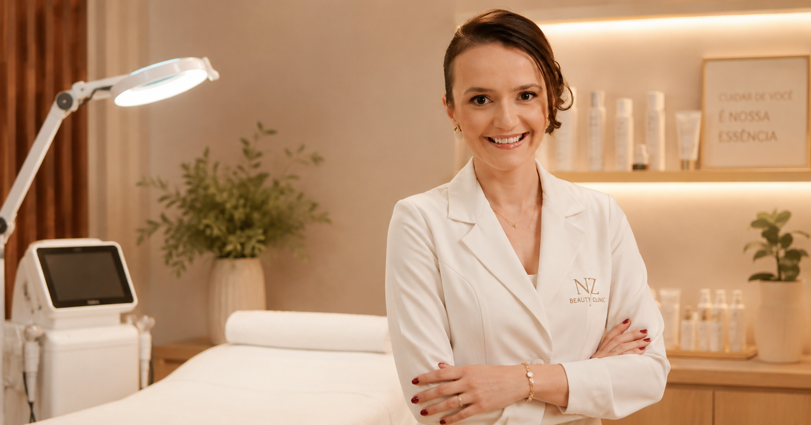
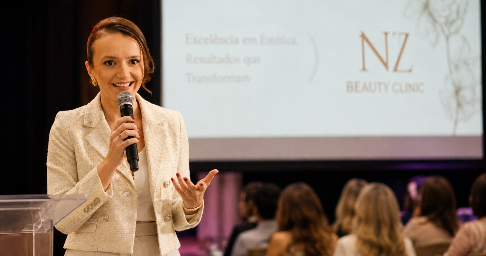
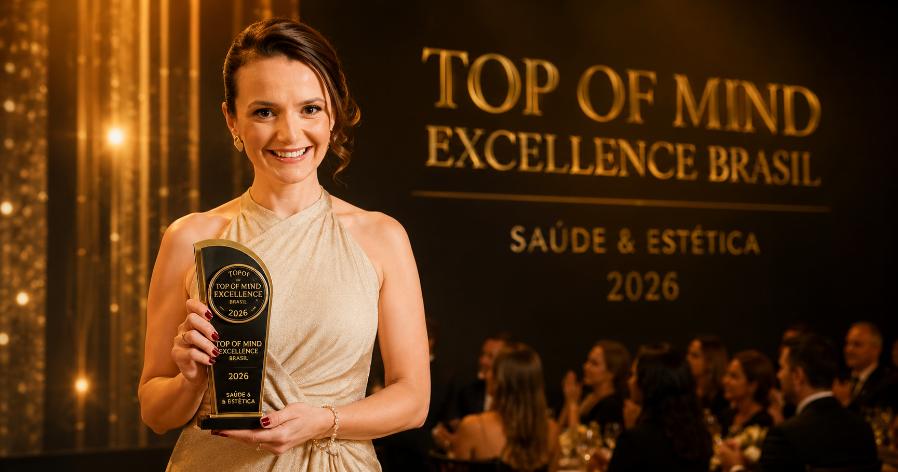

Profissional de Estética
Esteticista com formação científica sólida, atuando na interface entre cosmetologia, estética clínica e evidência científica. Especialista em estética facial e corporal.
Estética · Ciência · Educação · Erechim, RS
Ciência, educação e cuidado no centro de cada decisão estética.

Nágila Bernarda Zortéa
Esteticista · Mestre · Coordenadora URI Erechim
Nágila Bernarda Zortéa é Mestre, Esteticista e Docente, coordenadora do Curso de Graduação em Estética e Cosmética e da Pós-Graduação em Estética Avançada da URI Erechim — Universidade Regional Integrada do Alto Uruguai e das Missões.
Sua atuação combina o cuidado clínico individualizado com o rigor do conhecimento científico. Autora de publicações em periódicos nacionais e palestrante em eventos de referência da estética brasileira — incluindo o Estetika, maior evento de estética da América Latina —, Nágila representa uma nova geração de profissionais que coloca a ciência como alicerce da prática estética.
É também empresária e responsável pela NZ Beauty Clinic, em Erechim, Rio Grande do Sul, onde a experiência acadêmica e clínica se traduz em cuidado estético de excelência.
Esteticista com formação científica sólida, atuando na interface entre cosmetologia, estética clínica e evidência científica. Especialista em estética facial e corporal.
Professora Mestre e coordenadora do Curso de Estética e Cosmética e da Pós-Graduação em Estética Avançada da URI Erechim, contribuindo para a formação de profissionais de estética no Rio Grande do Sul.
Ver atuação acadêmicaAutora de publicações científicas em periódicos nacionais indexados, incluindo a Revista Brasileira de Cirurgia Plástica (SciELO), com pesquisas sobre tecnologias em estética, acne, melasma e cosmetologia.
Ver publicaçõesParticipação em eventos científicos e profissionais de referência na área de estética, incluindo o Estetika — o maior evento de estética da América Latina —, defendendo uma prática estética baseada em ciência e raciocínio clínico.
Ver eventosResponsável pela NZ Beauty Clinic, clínica de estética localizada no Centro de Erechim, Rio Grande do Sul, onde a experiência acadêmica e clínica se traduz em atendimento de excelência.
Conhecer a clínicaFormando profissionais de estética com base científica na Universidade Regional Integrada do Alto Uruguai e das Missões, Campus Erechim.
URI Erechim — Coordenadora
Nágila Bernarda Zortéa atua como coordenadora do Curso de Graduação em Estética e Cosmética da URI Erechim. O curso forma profissionais com conhecimento técnico, científico e clínico para atuar em estética facial, corporal e cosmetologia.
URI ErechimURI Erechim — Coordenadora
Coordenadora da Pós-Graduação em Estética Avançada da URI Erechim, programa voltado ao aprofundamento técnico e científico na área de estética clínica, com ênfase em protocolos avançados e fundamentação científica.
URI ErechimURI Erechim — Docente e Pesquisadora
Como docente e pesquisadora, Nágila contribui com a produção científica nas áreas de estética clínica, cosmetologia e saúde. Suas pesquisas abordam temas como tecnologias em estética, microbiologia cosmética, acne e melasma.
Ver publicaçõesA Universidade Regional Integrada do Alto Uruguai e das Missões (URI) é uma universidade comunitária do Rio Grande do Sul, com campus em Erechim. Referência em ensino, pesquisa e extensão na região do Alto Uruguai.
Conhecer a URI ErechimPublicações verificadas em periódicos nacionais indexados. Links para as fontes originais.
Revisão crítica sobre inovações tecnológicas na lipoaspiração contemporânea, avaliando eficácia, segurança e manejo pós-operatório. Analisa VASER, Renuvion, BodyTite, Morpheus8 e Argoplasma, destacando a necessidade de protocolos clínicos baseados em evidências. Publicado na RBCP, periódico da Sociedade Brasileira de Cirurgia Plástica.
Revisão sistemática sobre o uso clínico da radiofrequência em tratamentos estéticos, com análise de 11 estudos sobre diferentes modalidades e indicações. Aborda a afecção estética mais evidenciada e a eficácia do recurso tecnológico.
Estudo sobre o desenvolvimento de acne vulgaris associado ao uso contínuo de máscaras de proteção durante a pandemia de COVID-19, investigando os mecanismos patogênicos e abordagens de manejo estético e clínico.
Investigação sobre a contaminação microbiológica em amostras de batons disponíveis para testagem em estabelecimentos comerciais, evidenciando riscos para a saúde pública e a importância de regulamentação sanitária para cosméticos de uso coletivo.
Estudo sobre os mecanismos bioquímicos do melasma, distúrbio de hiperpigmentação cutânea de alta recidiva, com impacto significativo na autoestima e qualidade de vida dos pacientes.
Produção bibliográfica de Nágila Bernarda Zortéa — publicações que unem prática clínica, fundamento científico e didática para a formação de profissionais de estética.
Livro
Manual dedicado à eletroterapia estética — área que aplica recursos eletrofísicos nos tratamentos estéticos faciais e corporais. Uma contribuição didática e científica para profissionais e estudantes de estética e cosmetologia.
Participação em eventos de referência da estética brasileira, levando conhecimento científico e promovendo uma prática estética baseada em evidências.

32ª Estetika · São Paulo Expo · SP
São Paulo Expo — São Paulo, SP · 31 jul – 2 ago de 2026
Palestra apresentada no Simpósio de Estética Facial de Precisão da 32ª edição do Estetika — o maior evento de estética da América Latina, com 134 palestrantes, 89 horas de conteúdo e mais de 180 marcas expositoras. Nágila abordou a acne como possível manifestação de desequilíbrios sistêmicos, defendendo uma atuação estética baseada em ciência, avaliação individualizada e raciocínio clínico.
Integrou também a mesa-redonda “Hot Topics na Estética Facial”, ao lado de João Tassinary, Lucas Portilho, Luiz Rabelo, Priscilla Sebbe e Daniela Moleiro.
“Estar no Estetika como palestrante representa não apenas uma conquista profissional, mas também a oportunidade de levar o nome da URI a um dos espaços mais relevantes da estética na América Latina e contribuir para o fortalecimento de uma prática cada vez mais científica e responsável.” Nágila Zortéa — URI Erechim, agosto de 2026Fonte: URI Erechim (05/08/2026)
Estética in Sul · VIASOFT EXPERIENCE · Curitiba, PR
VIASOFT EXPERIENCE — Curitiba, PR · 17 ago de 2026 · 17h14 às 17h54
Palestra apresentada no Congresso de Estética do Estética in Sul 2026, realizado no VIASOFT EXPERIENCE, em Curitiba. Nágila abordou as intervenções estéticas no pós-operatório, com foco no manejo e tratamento da fibrose — tema de alta relevância clínica no contexto da estética corporal contemporânea.
Apresentada como Me. Nágila Zortéa (RS) — Esteticista e Cosmetóloga, Pós-graduada em Estética Clínica Avançada, Especialista em Ortomolecular, Ozonioterapia e Docência do Ensino Superior, Mestre em Envelhecimento Humano.
Fonte: Estética in Sul (esteticainsul.com.br)Beauty Fair International · IBRAMED · São Paulo, SP
Beauty Fair International — São Paulo, SP · 7 set de 2026 · 13h00
Palestra apresentada no stand da IBRAMED na Beauty Fair International 2026, de 5 a 8 de setembro, em São Paulo. Nágila abordou como a fotobiomodulação pode revolucionar o atendimento estético e pós-operatório, explorando os fundamentos científicos e as aplicações clínicas desta tecnologia no contexto da estética avançada.
Fonte: @ibramedbrasil (Instagram)Apenas eventos com fonte pública verificada são exibidos. Outros eventos poderão ser adicionados conforme disponibilidade de informações.
Seleção de entrevistas e participações em programas e canais relevantes.
Entrevistas, reportagens e participações de Nágila Zortéa em veículos de comunicação.
Reconhecida pela excelência e credibilidade no mercado de saúde e estética.

Top of Mind Excellence Brasil
Foi agraciada com o prêmio nacional Top of Mind Excellence Brasil, que reconhece profissionais que são referência em credibilidade e excelência no mercado de saúde e estética no Brasil.
Excelência em Estética, Resultados que Transformam.
A NZ Beauty Clinic é referência em estética e pós-operatório em Erechim/RS, liderada pela Profa. Mestre Nágila Bernarda Zortéa. Especializada em pós-operatório de cirurgia plástica, a clínica oferece drenagem linfática pós-cirúrgica, manejo de fibrose e recuperação estética — além de estética facial, estética corporal, depilação a laser e tratamento de lipedema.
Com avaliação máxima no Google Maps, a NZ Beauty Clinic une a formação científica da Profa. Mestre Nágila com o cuidado individualizado de cada paciente — seja no pós-operatório de lipoaspiração, abdominoplastia ou outras cirurgias plásticas, seja em tratamentos estéticos. Localizada no Centro de Erechim, Rio Grande do Sul.
Serviços
Nágila Bernarda Zortéa é Mestre, Esteticista, Coordenadora do Curso de Estética e Cosmética e da Pós-Graduação em Estética Avançada da URI Erechim. É também pesquisadora, palestrante e responsável pela NZ Beauty Clinic, em Erechim, Rio Grande do Sul.
Nágila Bernarda Zortéa é coordenadora do Curso de Graduação em Estética e Cosmética e da Pós-Graduação em Estética Avançada da URI Erechim (Universidade Regional Integrada do Alto Uruguai e das Missões, Campus Erechim, Rio Grande do Sul).
A NZ Beauty Clinic está localizada na Rua Cezária Matos, 82, Centro, Erechim/RS, CEP 99700-094. Para contato e agendamentos: (54) 99651-6136 ou pelo Instagram @nz_beautyclinic.
Sim. Em 2026, Nágila apresentou a palestra “Olhar integrativo na saúde além da pele” na 32ª edição do Estetika — o maior evento de estética da América Latina —, realizado no São Paulo Expo. Também integrou a mesa-redonda “Hot Topics na Estética Facial”. Consulte a seção de eventos para mais informações.
Nágila Bernarda Zortéa (NB Zortéa) publicou trabalhos em periódicos nacionais, incluindo: “Diferenciação técnica e inovação na lipoaspiração contemporânea” (RBCP, 2026, DOI: 10.1055/s-0046-1820097); “Uso da radiofrequência para tratamentos estéticos: uma revisão sistemática” (2021); “Acne vulgaris provocada pela máscara” (2021); “Contaminação microbiológica em provadores de batons” (O Mundo da Saúde, 2020); e “Fatores Bioquímicos do Melasma” (URI Erechim). Veja a seção de publicações para links diretos.
Nágila Bernarda Zortéa é Professora Mestre na URI Erechim, onde atua como coordenadora do Curso de Graduação em Estética e Cosmética e da Pós-Graduação em Estética Avançada. Sua atuação abrange docência, pesquisa científica e extensão universitária, formando profissionais de estética com base científica sólida no Rio Grande do Sul.
A NZ Beauty Clinic oferece Estética Facial, Estética Corporal, Depilação a Laser, acompanhamento de Pós-Operatório e tratamento de Lipedema. Os atendimentos são realizados por Nágila Bernarda Zortéa, Mestre e Esteticista, na Rua Cezária Matos, 82, Centro, Erechim/RS. Entre em contato pelo (54) 99651-6136 ou pelo Instagram @nz_beautyclinic.
Para agendar atendimento na NZ Beauty Clinic, entre em contato pelo WhatsApp (54) 99651-6136, pelo Instagram @nz_beautyclinic ou acesse linktr.ee/nagi_estetica. A clínica está localizada na Rua Cezária Matos, 82, Centro, Erechim/RS.
Sim. O acompanhamento de pós-operatório de cirurgia plástica em Erechim é um dos serviços centrais da NZ Beauty Clinic. Nágila Bernarda Zortéa, Mestre e Esteticista, atende pacientes de lipoaspiração, abdominoplastia, mamoplastia e outras cirurgias, com foco em drenagem linfática pós-cirúrgica, manejo de fibrose e recuperação funcional. Agendamentos: WhatsApp (54) 99651-6136.
A drenagem linfática pós-cirúrgica em Erechim é realizada na NZ Beauty Clinic, localizada na Rua Cezária Matos, 82, Centro de Erechim/RS. O atendimento é conduzido por Nágila Bernarda Zortéa, Mestre e Esteticista especializada em pós-operatório. Para agendamento: WhatsApp (54) 99651-6136 ou @nz_beautyclinic.
O acompanhamento médico cuida da cicatrização e de complicações clínicas — realizado pelo cirurgião. Já o pós-operatório estético é conduzido pela esteticista e inclui drenagem linfática pós-cirúrgica, recursos para reduzir edema, manejo de fibrose, cuidados com a pele e recuperação funcional. Na NZ Beauty Clinic, o protocolo é baseado em evidências científicas e personalizado para cada tipo de cirurgia: lipoaspiração, abdominoplastia, mamoplastia e outras.
Para agendamentos na NZ Beauty Clinic, convites para palestras ou informações sobre os cursos da URI Erechim.
Acompanhe a Nágila nas redes sociais e fique por dentro de novas palestras, conteúdos e novidades.